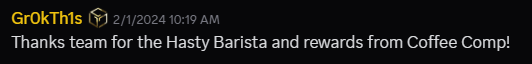

Role
Live Operations Designer | Community Manager | Content Strategist | Game
Designer | Social Media Coordinator
Skills Demonstrated:
- Community engagement and retention
- Live-ops event planning and execution
- Cross-functional collaboration
- Content creation and event storytelling
- Data-informed content development
- Event-driven game economy design
- Strategic map design for live events
- Social media marketing and Discord management
- NFT monetization strategy
- Player acquisition and lifecycle retention strategies
Overview
Town Star (Common Ground World) is a competitive town-building game that
runs weekly live-ops events, where players compete to produce the most
of a specific crafted item. Throughout the Coffee Craze event line,
players raced to produce Coffee, Hot Cocoa & more, with a Hasty
Barista Blueprint NFT (a skin for the Cafe) as the prize.
For Winter 2024, I designed and coordinated the
Coffee Craze live-ops event line for
Town Star, blending player feedback, seasonal
storytelling, strategic map design, and NFT integration to create an
engaging, monetized gameplay experience.
I owned the event end-to-end — from planning and execution to iteration.
I designed the game economy around the new crafts weekly, wrote all
player-facing comms, coordinated the launch of multiple new themed NFTs,
and used it as a test case for refining the weekly event loop.
Taglines for the event series (written by me):
Week 1: "May victory go to the swiftest and finest brew, and let our coffee
cups overflow with laughter and the spirited camaraderie of caffeine
enthusiasts!"
Week 2: "Turn your cozy town into a simmering cauldron of creamy goodness. The
only thing hotter than the cocoa is the competition!"
Week 3: "Whether you're a brewmaster or a cocoa commander, this event promises
a delightful blend of fun, froth, and a town buzzing with the sweet
aroma of Mocha."
Origin of Idea: The event was inspired by community
discussions highlighting a desire for coffee-themed content. I saw an
opportunity to meet that demand with a cozy, seasonally appropriate
series of events after the winter holidays — when players were returning
from breaks and looking for fresh, fun content. By aligning gameplay
with both player sentiment and seasonal vibes, I led the initiative to
bring this idea to life, demonstrating a data-driven, player-first
approach to live event design.
Map and Gameplay Design
In designing this event series, I used biome selection strategically to influence gameplay flow, address production bottlenecks, and surface new monetization opportunities. The first event took place in the Plains biome, chosen for its abundance of free meadows. This made early-game progression smoother, especially for new players encountering the coffee craft line for the first time, as it reduced friction in cow-based milk production—a key ingredient.
For the second event, I shifted to a Forest biome with both saltwater and freshwater edges. This biome intentionally restricted meadow access, creating new pain points around sugar and dairy sourcing. Wood became more plentiful, subtly shifting the challenge from construction materials to raw ingredient gathering. This pivot enabled meaningful upsell opportunities through NFTs that enhanced sugarcane or cow production—directly addressing player slowdowns while maintaining fair play.
The third event returned to a Forest biome, this time with expanded freshwater zones to support crafting. However, instead of focusing immediately on the coffee chain, players were encouraged to first generate income via Wool—a resource unrelated to the final craft. This design twist required players to balance a “cash crop” with a “point crop,” adding depth to town-building strategy and keeping older NFTs like the Baa-rilliant Sheep Pen or Wool Storage relevant.
Across all three events, biome and resource decisions were guided by player data and in-game analytics, allowing for responsive balancing and insight-driven iteration. Pain points like ingredient bottlenecks or crafting delays were not only design challenges but also prime areas for monetization through boosted NFTs. This method kept the game competitive and rewarding for free players, while offering value-additive, time-saving upgrades to paying players. Older NFTs were re-integrated thoughtfully into new systems, reinforcing their utility and sustaining their long-term appeal.
NFT Design
Four NFTs were introduced throughout the event series—three available for purchase and one distributed as a reward—to support a layered monetization and engagement strategy. Each NFT was designed to enhance gameplay in a distinct way while maintaining balance between free and paid playstyles.
The Epic Specialty Coffee Cart was designed for casual players or early-game support, passively generating coffee beans with no input requirements. This helped reduce early friction for newcomers exploring the coffee crafting chain and aligned visually with the event’s festive, cozy theme.
The Epic Hot Cocoa Chalet served as a mid-tier premium crafter. It processed ingredients more quickly than its free counterpart, allowing players to speed up production cycles without increasing final output volume. This created a time efficiency bonus that preserved competitive integrity while rewarding buyers.
The Legendary Barista Palace provided a top-tier strategic advantage: it not only crafted faster but also doubled the available Cafe workers. This had a significant impact on throughput for competitive players, especially those aiming for leaderboard dominance. Its power level was offset by limited availability and higher cost, making it a prestige item without breaking game balance.
Midway through the series, the Hasty Barista was introduced as a reward NFT skin which boosted Barista speed in the Cafe's. Distributed based on leaderboard performance, its rarity scaled with player rank—top players received higher-tier versions. This reward structure incentivized ongoing participation across events while giving high-performing players a unique, exclusive item that offered modest but meaningful gameplay utility.
All NFTs were designed with moderate but noticeable benefits—never so strong as to create a pay-to-win environment, but impactful enough to provide real value. The monetization model targeted natural gameplay pain points such as ingredient bottlenecks, production slowdowns, and resource scarcity. By offering NFTs that helped ease those specific tensions—without removing them entirely—the game created compelling reasons to invest while maintaining accessibility for free players.
This approach strengthened both revenue and retention. Players could opt in to NFTs as a way to optimize their strategies, while the broader ecosystem remained competitive and enjoyable regardless of spend. Each NFT also contributed to long-term system learnings, helping refine future events, balance adjustments, and monetization strategies.

Community Strategy
- Community-driven content inspired by player feedback
- Phased releases to maintain multi-week player engagement
-
Thematic social media campaigns and Discord engagement activities
- Live Town Halls with sneak peeks, AMAs, and giveaways
- Real-time feedback monitoring and responsive event adjustments
Cross-Functional Collaboration
While I owned the end-to-end design of the in-game economy and crafted the balance for new items and events, strong cross-functional collaboration was essential to bringing everything to life. I worked directly with our developers and engineers to implement systems, set production values, and ensure NFT functionality matched both design intent and gameplay integrity.
I partnered with the Art Team by first co-developing initial asset concepts, whether it was a new building, item, or NFT. Once the art was finalized, I would revisit and expand the gameplay design to incorporate distinct mechanics that aligned with visual elements, enhancing both utility and thematic cohesion.
I also coordinated with the Livestream and Content teams to organize developer AMAs, making sure schedules, topics, and tech accommodations were aligned for smooth and engaging broadcasts. These sessions gave players direct access to developers and helped deepen community trust.
On the publishing side, I collaborated with our website engineers to time NFT sales and ensure content—descriptions, media, pricing, and functionality—was accurately represented on the site. This ensured a seamless experience from in-game mechanics to marketplace visibility.
Although I personally handled the game design and economy work, these partnerships across departments were critical for delivering a cohesive, player-focused experience that reflected our team’s creativity and responsiveness.
Results
- Increased DAUs (Daily Active Users) during event period
- High engagement on Discord and Twitter (X)
-
Positive community sentiment around legacy NFT use and event design
- Exceeded internal KPIs for NFT sales
-
Extended player session length and repeat engagement over multiple
weeks
The event successfully drove player engagement and retention, with a
notable increase in daily active users during the event period. The
phased release strategy kept players engaged and eager for each new
installment, while the community-driven approach fostered a sense of
ownership and pride in the event's success.
Player Feedback
Players expressed excitement about the new crafting systems and the
thematic integration of coffee and cocoa into gameplay. The event was
well-received for its balance of challenge and accessibility, with many
players praising the thoughtful design of the map and the strategic
opportunities it presented. The phased release strategy kept players
engaged and eager for each new installment, while the community-driven
approach fostered a sense of ownership and pride in the event's success.
Key Takeaway
The Coffee Craze event exemplifies my ability to merge
community-driven design,
live-ops execution,
progressive storytelling,
fair monetization strategies, and
cross-team collaboration to deliver
highly engaging and sustainable gaming experiences. This project
represents my passion for building thriving player communities and
executing strategic, player-first live events.
×